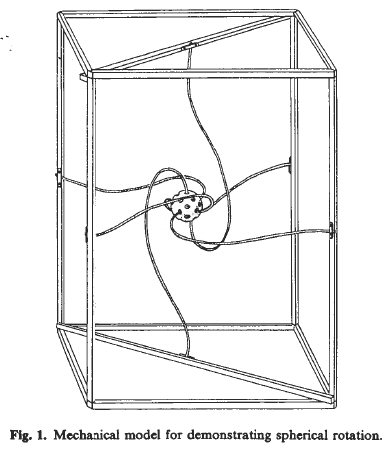

Fiugre 10
A big part of Wolff's Wave Structure of Matter model depends on the "spherical rotation" of the vacuum medium. (See Milo Wolff's book "Schrodinger's Universe".) Spherical rotation is a way for a continuous medium to stretch/twist and rotate/spin such that after 720° rotation the medium is back to its initial configuration.
The basic reference I've used to start understanding this motion is E. P. Battey-Pratt and T. J. Racey, "Geometric Model for Fundamental Particles", International Journal of Theoretical Physics, Vol. 19, No. 6, pp. 437-475, 1980.
Figure 1 from that paper shows a simple model that can be built to show that the center sphere, attached by string or rubber bands to a fixed frame, requires a rotation of 720° to return to its original configuration.

Figure 1
Figure 3 from the paper shows several snap shots of the motion as the center sphere rotates through 720°.
Figure 2
I've struggled with trying to understand this motion. I think I understand it now and I hope to provide enough pictures and animations so that it becomes "simple" for you to understand. I'll show you a somewhat complicated way of looking at it (as pictured in the paper) and then a (I think) simpler way to picture the motion.
Start with the ball hanging in space with 6 stings attached. These 6 strings are along the x-, y-, z- axes. Think of these as 6 strings attached to the inside surface of a fixed spherical shell and at the other end, attached to the ball at the center which is to rotate. All the strings are straight.
Figure 3
Note that this is not the "initial" state. This is not the configuration we mean when writing that "after 720° rotation of the center ball the system is back to its initial configuration." Because of this, these "spherical rotations" never returns to the "all strings straight" configuration.
Well then, how do we get the "intial configuration"?
We have assigned coordinate axes in the above figure.
Take the x-axis and rotate the center sphere by 180°. This is the initial configuration.
Figures 4 & 5
Now, rotate the center sphere about the z-axis. This generates all the snap shot images in Fig. 3 of the Batty-Pratt paper (see above).
Figure 6
(Sorry for the low resolution. One of my graphics programs is fighting me and I lost this round. Hope to have better quality animation late, but also don't want to spend all my time on computer programming issues. Let's move on to the physics of it all!)
The motion looks complicated! It gave me quite a headache to figure out how to program it. But don't worry, I've found a relatively simple way to understand and to visualize (and program) the motion.
Consider the initial rotation about the x-axis which results in the initial configuration. This stretches all the rubber bands (which I'll now call "stream-lines") in the yz-plane to become a plane of spiral steam-lines.
Figure 7 & 8
(Yup, yet another graphics program....)
The outer sliver color ring is to represent the fixed spherical shell. In "reality" there is no fixed spherical shell, only vacuum medium. But using a spherical shell helps visualize the problem. Just remember it really isn't there.
The question to think about is: "What happens to all the other stream-lines from the outer shell to the rotating center sphere that are not in the yz-plane?"
Well, they also need to be rotated. All the stream-lines in the yz-plane are rotated by 180° as you follow them from the outer, fixed spherical shell in to the rotating center sphere. And the two stream-lines exactly on the x-axis (two because one is on the +x-axis and the other is on the -x-axis) also need to be twisted by 180°. It is then reasonable to assume that all the other stream-lines between the yz-plane and the x-axis also need to be rotated by 180°.
From the circular symmetry of the problem, rotation about the x-axis, we can say that all the stream-lines that define a cone about the x-axis will get rotated in exactly the same way. So, we can think of the problem as layers of cones, centered (apex) at the coordinate center, with symmetry axis being the x-axis.
Figure 9
The result is a vortex structure spiraling 180° in to the center rotating sphere.
Fiugre 10
This is the initial configuration. This is what I now call the "Spherical Rotation structure", "SRot strucutre" or just "SRS".
The dynamics comes in "simply" by letting this strucutral pattern rotate about the z-axis.
Figure 11
Figure 12
Figure 13
Figure 14
It is a little tricky to understand this rotating strucutral pattern. The pictures are a little missleading until you understand them. It is NOT the structure that is rotated. This is why I left the x- and y-axes stationary. It is the pattern that gets rotated in the medium that the pattern is passing through. It is not the space that is rotating but the vortex pattern in the space that is rotated.
Consider these still pictures.
Fiugre 15 & 16
There is a small white square at the end of one of the stream-lines in the first still. There is another white square in the second still. Although it looks like we simply rotated the stream-line to the new position, this is NOT what happend. The stream-lines indicated by the white squares are actually two different stream-lines. The pattern has shifted from still #1 to still #2, not the stream-lines. Remember that the stream-lines are fixed to the outer shell which doesn't rotate. But the pattern does rotate to be realized by different stream-lines. In order to accomplish this, the stream-lines need to move in the way shown in the very first (gray scale) animation on this web page. That's the movement of the stream-lines.
I know it is a little tricky to see, but once you get it, it is much easier to visualize what is going on.
Some things I'd like to point out....
There are 2 stream-lines that hold their shape up to a little twisting. These are the two strem lines coming in along the z-axis. They beome spirals shapes in a plane and they hold that planar shape as the spherical rotation structure goes through its motion. These two stream-lines are shown in green in the next figure.
Figure 17
There are two lines/axes that are "special" to the spherical rotation structure.
They are:
1) The z-axis that the center sphere rotates about. (You can say that the
center sphere rotation defines a direction we label "z-axis".)
2) The vortex's symmetry axis which is 90° from the z-axis.
This vortex axis travels around the z-axis in what we can label as the "xy-plane".
If we consider a line from infinity to the spherical rotation structure (to the fixed shell, but the shell isn't really there) we see that depending on where the line is coming from with respect to the spherical rotaion (SRot) structure's orientation, the path traveled through the SRot is different from other lines coming in from a different direction. Simply stated, the SRot structure is not spherically symmetric. This means that we need to worry about the spherically symmetric in-waves of the WSM model as the in-waves pass through the SRot strucutre. Different parts of the in-wave might get "distorded" in different ways, thus producing a non-spherically symmetric out-way. For example, a line dircetly along the z-axis will travel differently through the SRot strucutre than a line traveling, say, in along the x-axis. We wont know until the detials are worked out.
There is much more about the spherical rotaion on my other WSM web pages.
Usage Note: My work is copyrighted. You may reference and use my work in non-profit projects but you may not include my work, or parts of it, in any for-profit project without my consent.